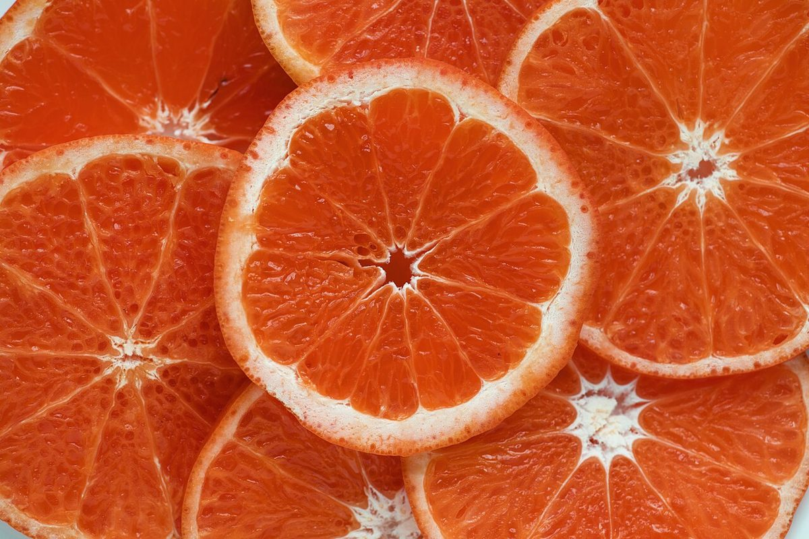
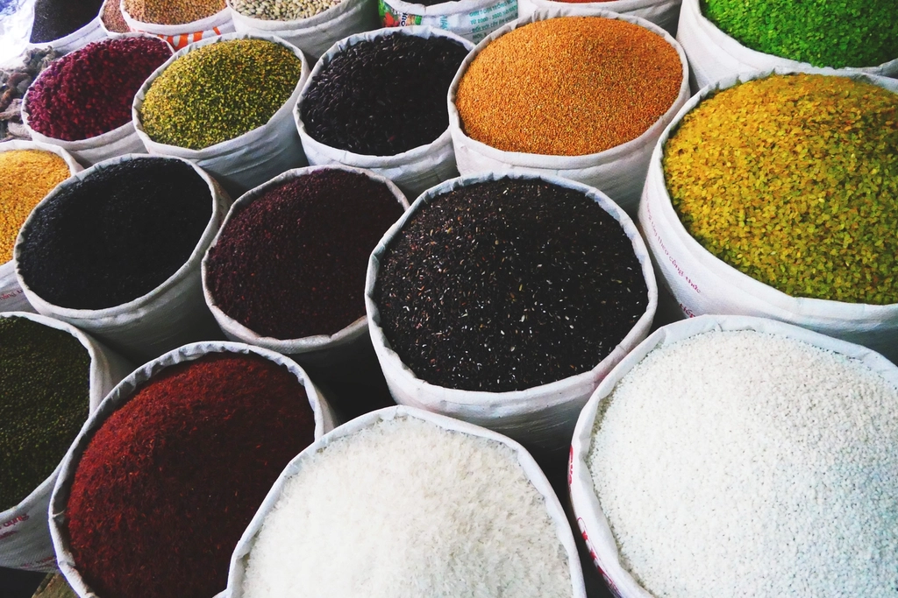
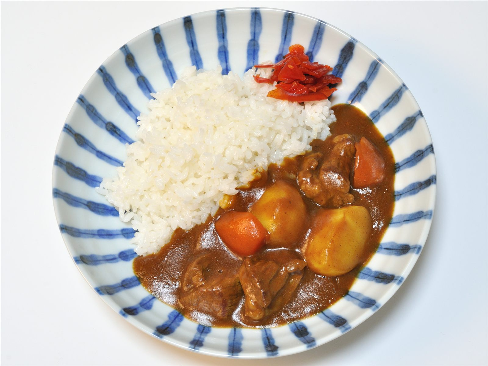
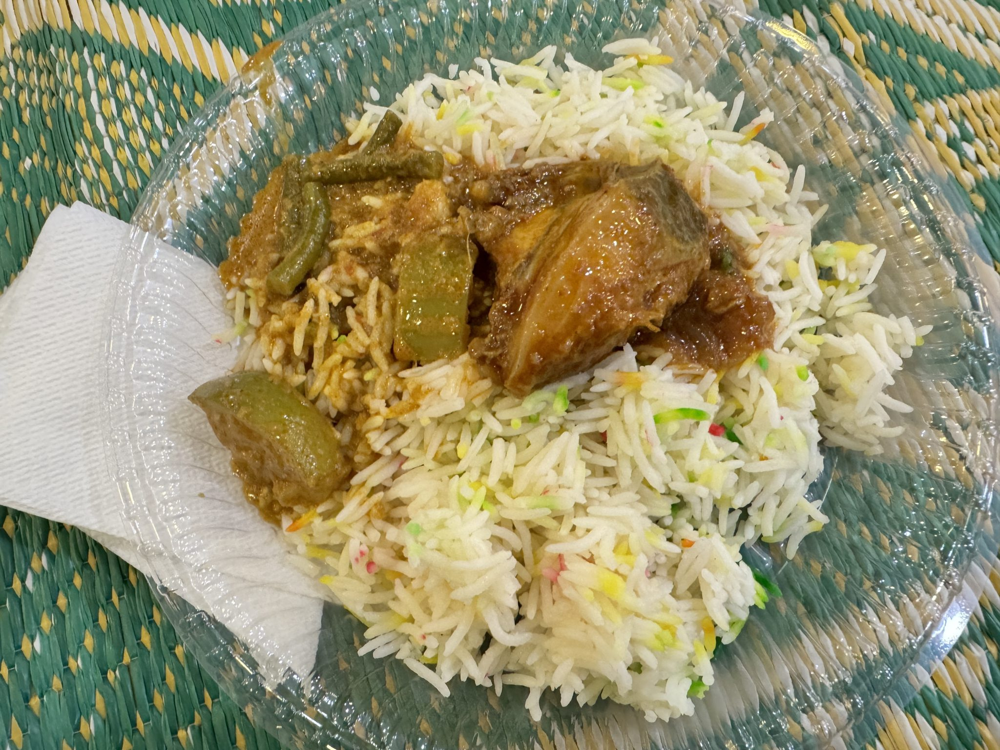
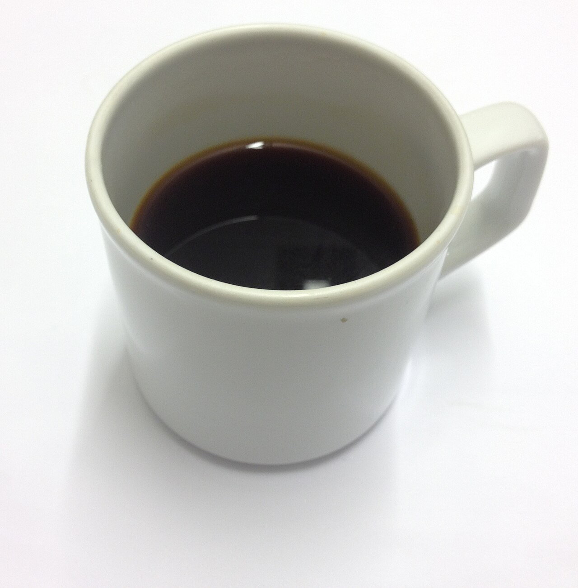
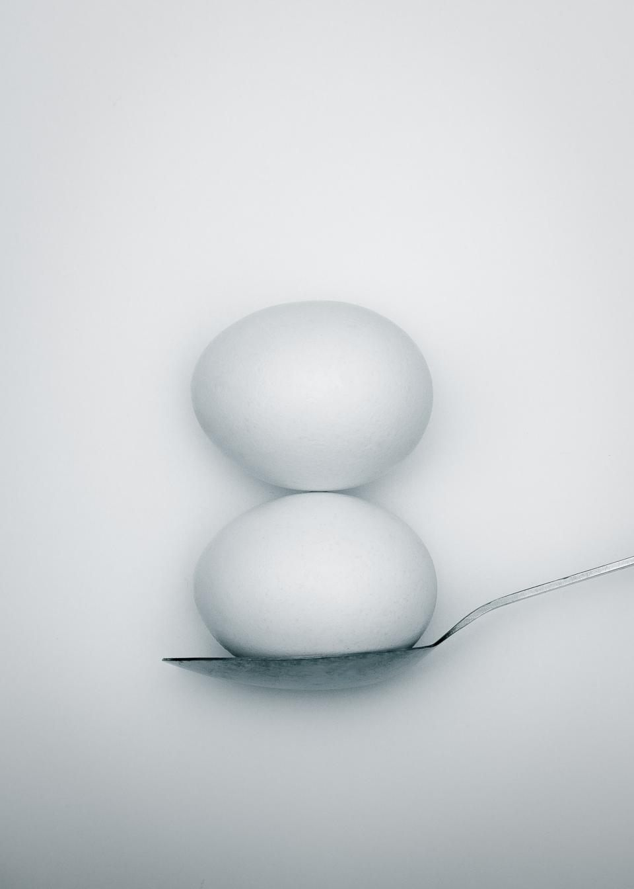
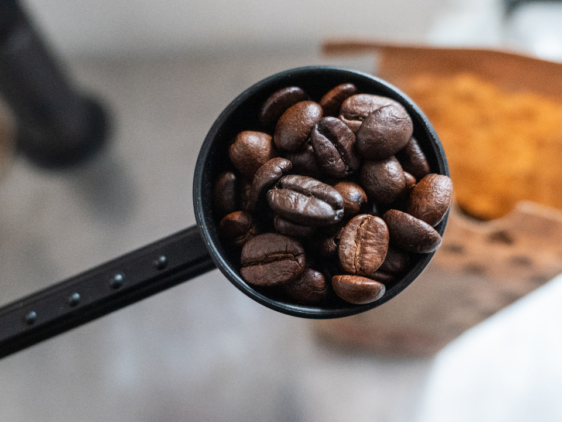
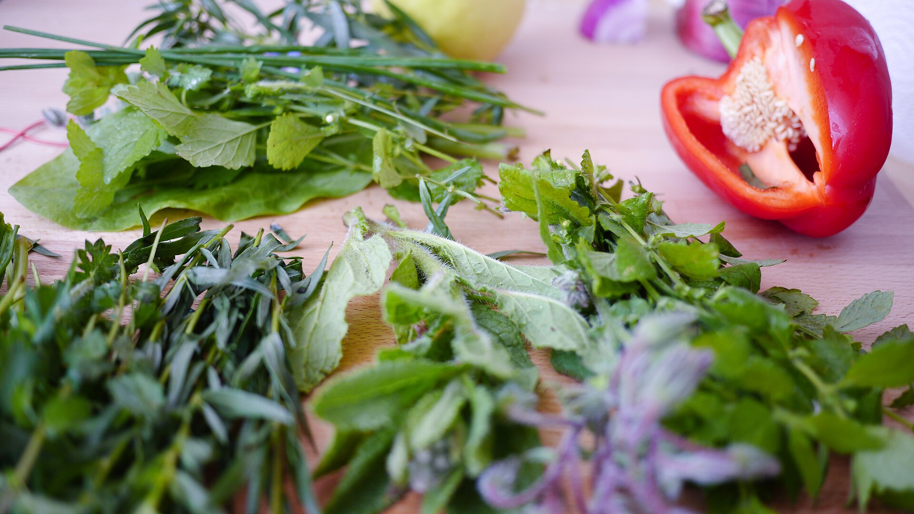
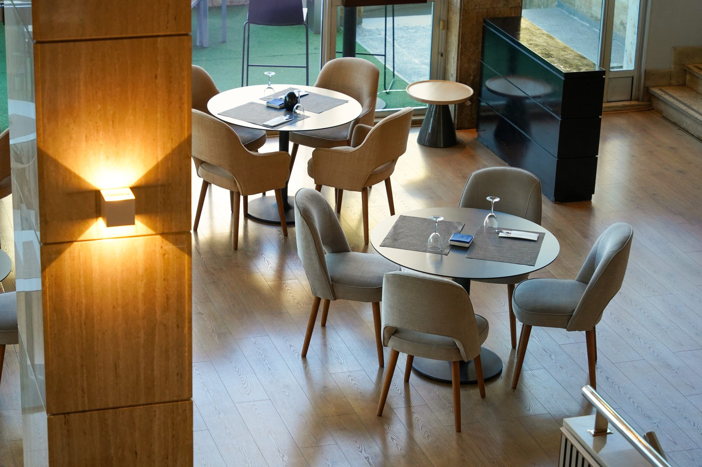

ABOUT
お店のこと
ニルカフェは、秋田市手形からみでんにあるスパイスカレーとコーヒーの店です。2022年3月にキッチンカーとして始まり、同年4月に店舗を開いたと、地元の記事で紹介されています。
- グルテンフリーのスパイスカレーを提供(15種類以上のスパイスを使い分け)
- 鶏白湯や煮干しのだしで旨みを加えた、やさしい味わい
- 「味だけでなく色合いも楽しめるカレーなので、気持ちが明るくなる」という店長の言葉(秋田魁新報)から生まれた「3種のカレー」
- 2023年7月の大雨で店内が浸水する被害を受けたのち、営業を再開
店名の由来は確認できていません。このページの文章と配色は、取材記事で分かった「香り・色合い・明るい気持ち」を手がかりに、制作側が考えたイメージです。

オレンジは「オレンジチキンカレー」に合わせたイメージ写真です。

MENU
メニュー
地元の記事で紹介されている料理です。写真は料理のイメージで、実際の盛り付けとは異なります。

自家製味噌キーマ
横手市十文字町のご実家で家族と作る味噌を使った、和風のキーマカレーと紹介されています。

オレンジチキンカレー
オレンジとだしで煮込んだチキンカレーと紹介されています。

3種のカレープレート
一皿で3種類の味と色合いを楽しめるプレートです。味玉やキャロットラペ、ピクルスと混ぜて食べる楽しみ方が紹介されています。
| カレー | 定番2種のほか、日替わり・あいがけなど(最新の内容は準備中) |
|---|---|
| コーヒー・スイーツ | コーヒーのほか、ケーキ・アフォガード・パフェなどが紹介されています(詳細は準備中) |
| 価格 | 準備中 |








VOICE
お客様の声(イメージ例)
以下は制作側が考えたイメージ例です。実際のお客様の声ではありません。
イメージ例
ひと皿に色がいくつも並んでいて、見ているだけで元気が出ました。スパイスの香りもやさしいです。
ご来店のお客様(イメージ)
イメージ例
味噌の入ったキーマがほっとする味でした。食後のコーヒーまでゆっくりできました。
ご来店のお客様(イメージ)
イメージ例
小麦を控えたいときにも選びやすいのがうれしいです。また寄りたいと思います。
ご来店のお客様(イメージ)
ACCESS
アクセス
| 住所 | 〒010-0861 秋田県秋田市手形からみでん3-74 |
|---|---|
| 電話 | 準備中 |
| 営業時間 | 準備中 |
| 定休日 | 準備中 |
| @niru_cafe(最新の情報はこちらでご確認ください) |